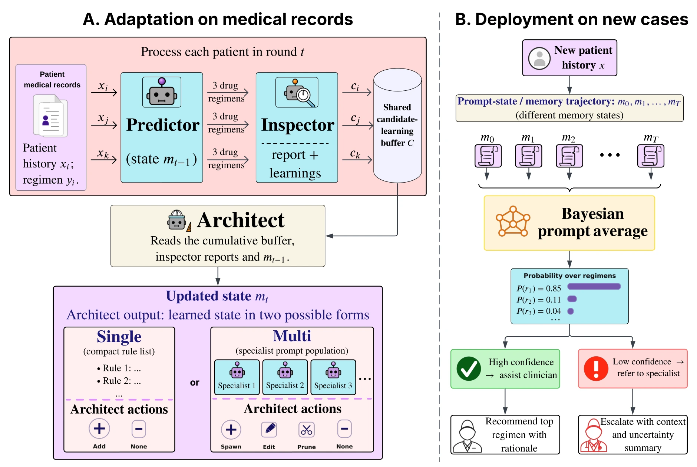
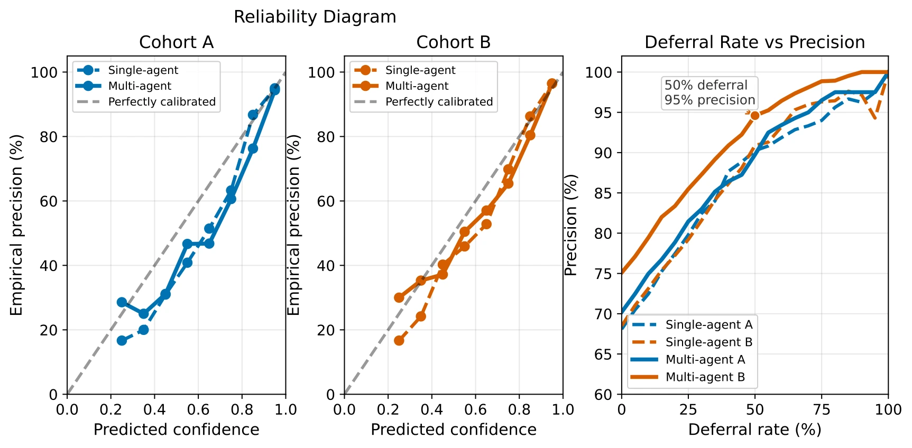

MANANA: Teaching LLMs to Recommend and Defer in Underrepresented Epilepsy Care
1Electrical and Computer Engineering, UCLA 2Neurology, UCLA
3Makerere University 4St. Francis Hospital Nsambya
*Equal contribution
NeurIPS 2026

Abstract
Specialist epilepsy expertise is scarce in resource-constrained settings, creating a pressing need for decision-support tools that help frontline clinicians manage longitudinal treatment. Such systems must adapt to local prescribing practices and recognize when specialist review is needed. Most public medical AI benchmarks focus on high-income clinical settings, leaving prescribing practices, medication availability, and follow-up patterns in low-resource contexts largely unrepresented. We study this problem through a multidisciplinary collaboration focused on pediatric epilepsy care in Uganda. The task is to predict anti-seizure medication regimens from longitudinal unstructured notes collected by local clinicians across serial visits. General-purpose language models achieve non-trivial agreement with physician prescriptions, but neurologists' review of model reasoning traces shows that their errors reflect Western prescribing defaults that do not account for local clinical practices. We introduce MANANA, a non-parametric prompt-learning framework that learns how to reason about local prescribing decisions from a small patient-level training set. MANANA turns observed prescription errors into an auditable prompt memory, instantiated in single-agent and multi-agent variants, and outperforms classical ML models, direct LLM prompting, and prompt-optimization baselines across two independently collected Ugandan cohorts. The sequence of prompts produced during learning also provides a basis for estimating uncertainty. We exploit this through Bayesian prompt averaging (BPA), which combines predictions across the learned prompt trajectory to produce prescription likelihoods and a deferral signal. Using the same MANANA-Multi trajectory, BPA improves top-1 physician-regimen agreement from 66% to 70% on Cohort A and from 73% to 75% on Cohort B while preserving top-3 coverage. More consequentially, it enables clinically meaningful selective prediction: the system can auto-handle the most confident half of cases at 95% precision, or the most confident quarter at 99% precision, while deferring lower-confidence cases for specialist review. These results suggest a path toward locally adapted clinical LLM systems that learn from limited site-specific data and reserve scarce specialist attention for the cases where uncertainty is highest.
How it works
Learning local prescribing guidance
MANANA separates prediction, error inspection, and memory updates. Candidate lessons are collected in an evidence buffer; recurring patterns support updates to the prompt memory. The resulting instructions remain readable and auditable, without retraining the underlying language model.
Bayesian prompt averaging
The prompts produced over learning rounds provide multiple views of the same clinical case. Bayesian prompt averaging (BPA) combines their predictions into prescription likelihoods and a confidence signal for deferral to specialist review.
Results
We evaluate on two independently collected Ugandan pediatric epilepsy cohorts. All prompt-learning methods use 50 training patients and 20 validation patients from Cohort A, with five seeds. The remaining Cohort A patients and all of Cohort B form the held-out test sets. V1–V3 denote successive visits; monotherapy uses one medication and polytherapy uses multiple medications.
| Method | Monotherapy | Polytherapy | ||||
|---|---|---|---|---|---|---|
| V1 | V2 | V3 | V1 | V2 | V3 | |
| Cohort A | ||||||
| Expert System | ||||||
| EpiPick | 52.9 | 49.1 | 51.3 | — | — | — |
| Classical methods | ||||||
| Naive Bayes | 71.3 ±2.1 | 67.2 ±3.7 | 74.9 ±2.9 | 35.8 ±1.1 | 40.0 ±0.9 | 37.7 ±2.3 |
| XGBoost | 70.2 ±1.0 | 64.1 ±1.1 | 71.1 ±0.3 | 33.6 ±2.7 | 40.3 ±1.6 | 43.1 ±2.0 |
| Direct LLM prompting | ||||||
| Base Prompt (0-learning) | 44.4 ±1.8 | 56.4 ±1.3 | 59.3 ±0.3 | 10.1 ±1.9 | 29.3 ±3.3 | 30.2 ±1.3 |
| Single-agent | 78.4 ±1.1 | 84.5 ±1.9 | 90.3 ±2.4 | 14.5 ±1.2 | 40.2 ±0.7 | 42.3 ±2.5 |
| Prompt optimization | ||||||
| DSPy (GEPA optimizer) | 87.1 ±1.8 | 91.3 ±4.1 | 95.0 ±3.2 | 24.5 ±0.9 | 58.7 ±2.9 | 70.2 ±3.4 |
| ExpeL | 67.2 ±2.4 | 81.0 ±3.9 | 82.7 ±3.7 | 18.9 ±1.1 | 28.3 ±1.4 | 42.9 ±2.5 |
| TextGrad | 87.4 ±2.3 | 88.1 ±5.2 | 87.3 ±4.4 | 21.9 ±4.1 | 50.7 ±4.3 | 57.6 ±3.0 |
| MANANA-Single | 87.0 ±0.4 | 92.1 ±2.5 | 93.2 ±2.1 | 25.3 ±1.0 | 57.0 ±5.6 | 64.1 ±3.9 |
| MANANA-Multi | 89.7 ±3.2 | 95.3 ±2.8 | 97.0 ±2.1 | 30.8 ±1.9 | 61.7 ±8.4 | 72.6 ±11.1 |
| Cohort B | ||||||
| Expert System | ||||||
| EpiPick | 58.0 | 61.4 | 58.1 | — | — | — |
| Classical methods | ||||||
| Naive Bayes | 37.7 ±2.6 | 40.9 ±3.2 | 38.2 ±2.5 | 4.4 ±1.2 | 2.5 ±0.5 | 4.0 ±1.3 |
| XGBoost | 41.5 ±2.6 | 45.5 ±2.2 | 45.3 ±2.3 | 10.4 ±1.4 | 7.1 ±0.6 | 4.6 ±0.3 |
| Direct LLM prompting | ||||||
| Base Prompt (0-learning) | 53.1 ±0.5 | 57.6 ±0.7 | 58.4 ±1.1 | 24.8 ±3.6 | 29.1 ±1.6 | 30.4 ±1.6 |
| Single-agent | 76.7 ±0.6 | 82.6 ±2.3 | 83.8 ±2.4 | 39.4 ±2.4 | 49.4 ±1.4 | 54.0 ±1.1 |
| Prompt optimization | ||||||
| DSPy (GEPA optimizer) | 81.8 ±4.2 | 93.3 ±2.1 | 94.8 ±1.1 | 44.8 ±0.8 | 59.6 ±3.7 | 62.7 ±2.9 |
| ExpeL | 83.1 ±3.8 | 88.5 ±4.8 | 86.5 ±4.5 | 32.0 ±2.6 | 56.2 ±3.3 | 64.3 ±4.6 |
| TextGrad | 74.0 ±9.9 | 87.7 ±4.7 | 87.3 ±4.2 | 39.0 ±3.3 | 52.4 ±8.6 | 57.3 ±8.5 |
| MANANA-Single | 82.2 ±5.0 | 92.8 ±2.7 | 92.2 ±2.2 | 48.2 ±1.7 | 65.2 ±3.8 | 66.4 ±4.7 |
| MANANA-Multi | 87.3 ±2.9 | 95.1 ±1.6 | 93.2 ±1.9 | 40.2 ±4.6 | 61.1 ±5.8 | 69.8 ±7.5 |
Uncertainty and deferral
On the same MANANA–Multi trajectory, Beta-Binomial BPA improves top-1 physician-regimen agreement from 66% to 70% for Cohort A and from 73% to 75% for Cohort B. On Cohort B, the most confident half of predictions achieve 95% precision, and the most confident quarter achieve 99% precision.
| Cohort | Weighting | Top-1 | Top-3 | Gap | P@25% | P@50% |
|---|---|---|---|---|---|---|
| A | Linear | 70% | 84% | 0.191 | 96% | 90% |
| A | Beta-Binomial BPA | 70% | 83% | 0.194 | 96% | 90% |
| A | Dirichlet BPA | 70% | 84% | 0.187 | 97% | 90% |
| B | Linear | 76% | 88% | 0.208 | 99% | 95% |
| B | Beta-Binomial BPA | 75% | 88% | 0.214 | 99% | 95% |
| B | Dirichlet BPA | 75% | 88% | 0.203 | 99% | 95% |
| Threshold / subset | Cohort A | Cohort B | ||
|---|---|---|---|---|
| Precision | Coverage | Precision | Coverage | |
| Confidence ≥ 0.95 | 97% | 14% | 99% | 18% |
| Confidence ≥ 0.90 | 94% | 33% | 96% | 40% |
| Confidence ≥ 0.85 | 86% | 56% | 92% | 56% |
| Top 25% most confident | 96% | 25% | 99% | 25% |
| Top 50% most confident | 90% | 50% | 95% | 50% |
| All cases | 70% | 100% | 75% | 100% |

BibTeX
@misc{rajesh2026manana,
title={Teaching LLMs to Recommend and Defer in
Underrepresented Epilepsy Care},
author={Shreyas Rajesh and Kartik Sharma and Tonmoy Monsoor and
Mehmet Yigit Turali and Richard Idro and Juliana Kayaga and
Robert Sebunya and Tracy Tushabe Namata and
Jessica Nichole Pasqua and Vwani Roychowdhury and
Rajarshi Mazumder},
year={2026},
eprint={2606.31036},
archivePrefix={arXiv},
primaryClass={cs.LG},
url={https://arxiv.org/abs/2606.31036}
}